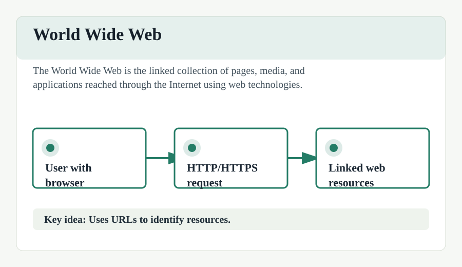

World Wide Web (WWW)
The World Wide Web (WWW), commonly known as the Web, is an information system where documents and other web resources are identified by Uniform Resource Locators (URLs), which may be interlinked by hyperlinks, and are accessible over the Internet.
Invented by Sir Tim Berners-Lee in 1989 while at CERN, the Web has become the primary tool billions of people use to interact with the Internet. It is based on three core technologies: HTML, HTTP, and URLs.
